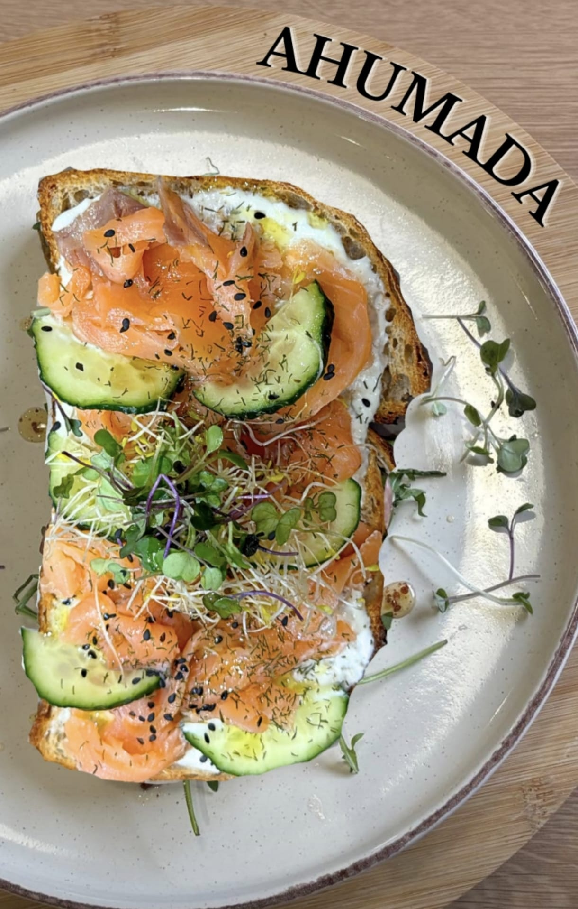
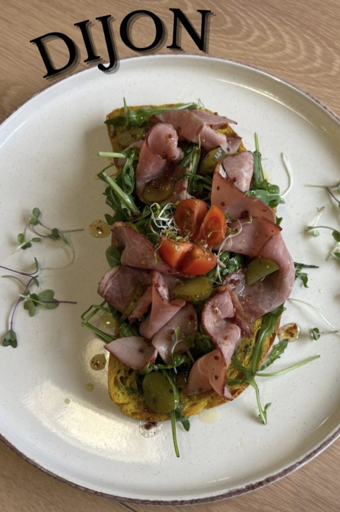
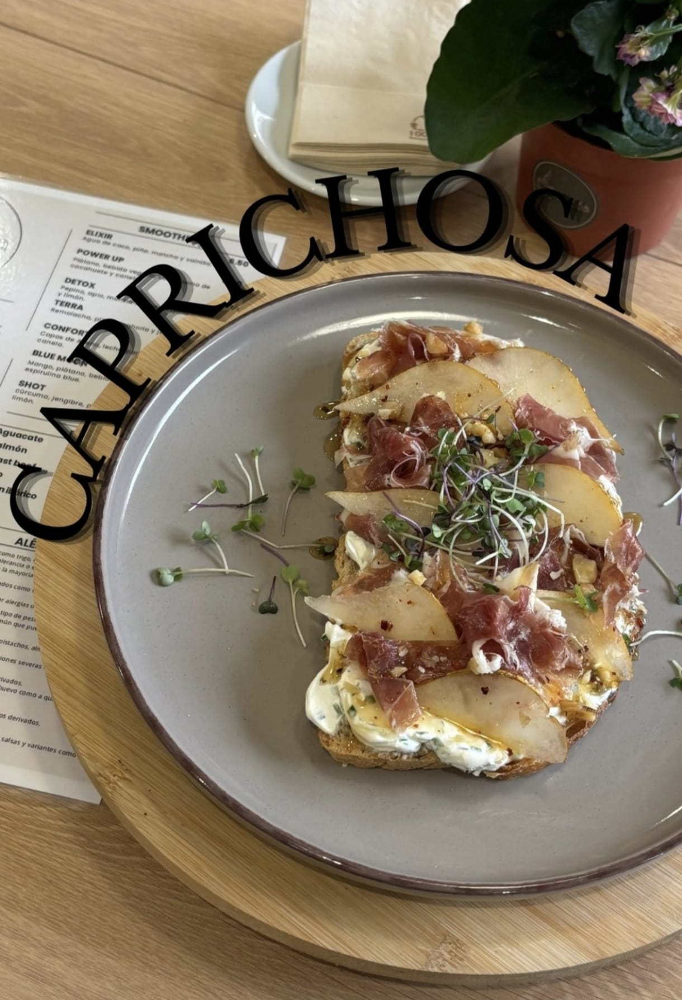
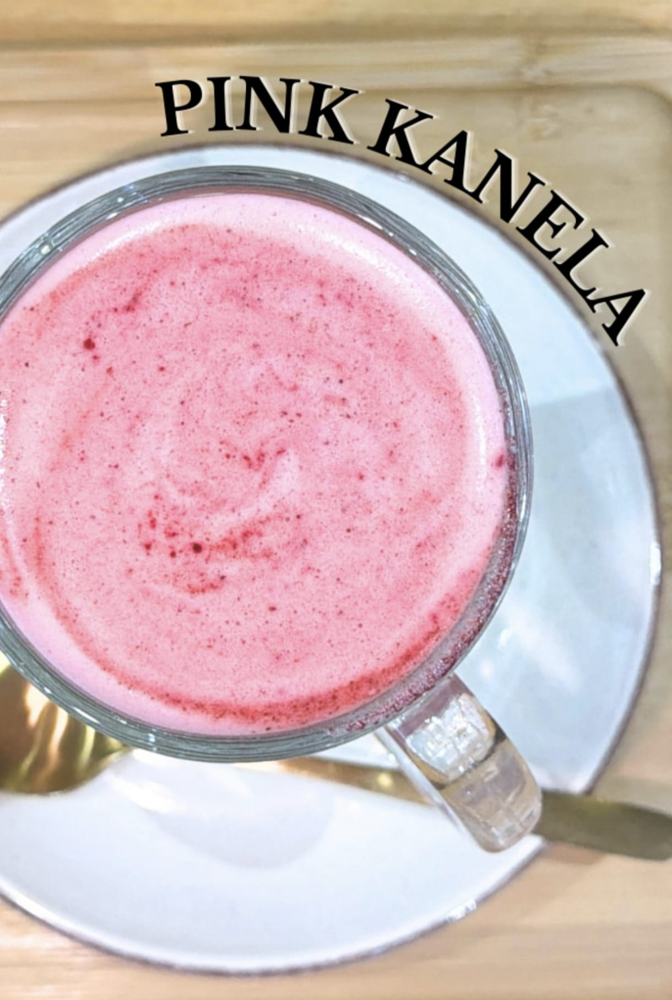

Ahumada
Salmón, pepino, brotes y una mezcla fresca llena de sabor.
Un rincón cálido donde el café, las tostadas y los detalles se disfrutan sin prisa.
Ver especialidadesEn Kanela no solo vienes a tomar café. Vienes a disfrutar de un ambiente tranquilo, platos con intención e ingredientes que suman.

Salmón, pepino, brotes y una mezcla fresca llena de sabor.

Una tostada equilibrada, intensa y perfecta para empezar el día.

Jamón, pera, cremosidad y ese toque especial que la hace única.

Una bebida fresca, bonita y diferente para disfrutar sin prisa.
Kanela es ese sitio al que vuelves porque te hace sentir en casa.
C/ Fuente del Hierro 21, trasera · Pamplona
Lunes a viernes: 8:30 - 13:30 / 16:30 - 20:00
Sábado y domingo: 9:30 - 14:30 / 17:00 - 20:00